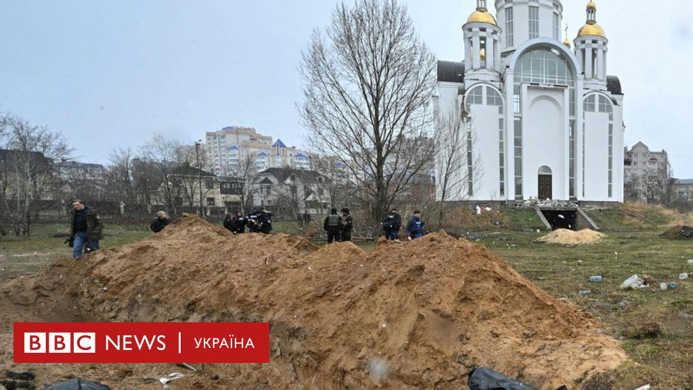
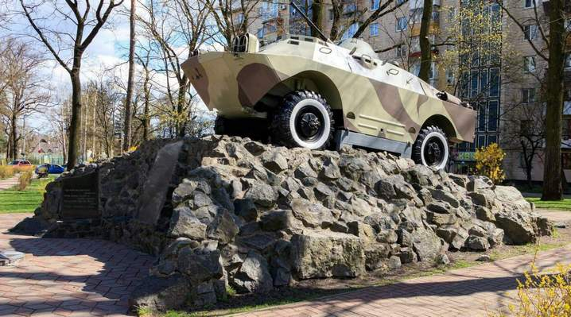
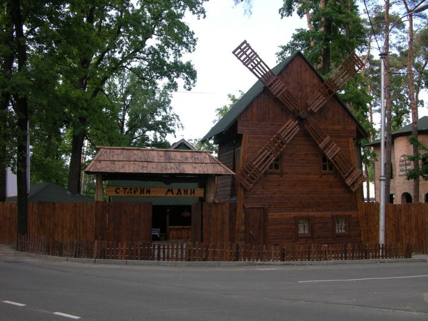
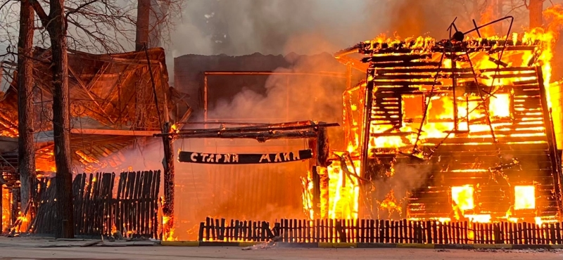

Брацька могила біля церкви Святого Апостола

Церква Святого Апостола Андрія Первозванного та Всіх Святих ПЦУ
Меморіал воїнам інтернаціоналістам в якого стриляли росіянини, томущо думали що це справжній танк

Меморіал воїнам інтернаціоналістам
Старий Млин

Нажаль Ресторан Старий Млин було спалено росіянинами як і Жираф, Епіцентер тощо
